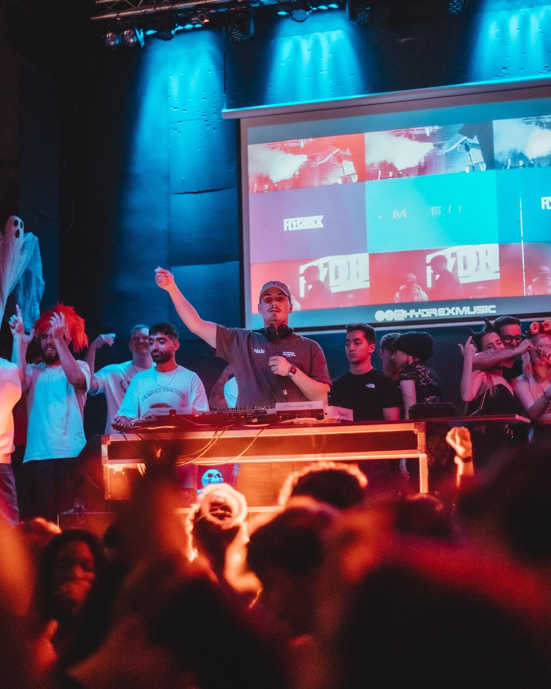

Cada sala tiene su propia personalidad. No existen dos públicos iguales ni dos noches que se desarrollen de la misma manera. Por eso, una buena sesión no consiste únicamente en seleccionar música, sino en entender el momento, leer la pista y construir una experiencia que evolucione con ella.
Durante más de 12 años he actuado en clubs, salas y eventos de diferentes formatos, adaptando cada sesión a la identidad del local y al tipo de público. Desde un elegante Warm Up hasta un Headliner de máxima energía o un Closing Set para cerrar la noche con personalidad.
Mi objetivo siempre es el mismo: ofrecer una sesión profesional que conecte con la pista, respete la identidad del club y haga que el público quiera volver.
Cada fase de una noche tiene una función diferente. Saber adaptarse a cada una de ellas marca la diferencia entre una simple sesión y una experiencia que mantiene al público conectado desde la apertura hasta el cierre.
El inicio de la noche define todo lo que vendrá después. Un Warm Up bien construido genera expectación, acompaña la llegada del público y crea una evolución natural sin quemar los momentos más intensos demasiado pronto.
Cuando la pista está preparada comienza el momento de mantener la intensidad. La selección musical, la lectura del público y la capacidad de adaptación permiten sostener una sesión dinámica durante horas sin perder el ritmo.
Cerrar una sala también requiere personalidad. Mantener la energía, sorprender en los últimos minutos y terminar con la canción adecuada consigue que el público recuerde la noche mucho después de abandonar la pista.
Una buena sesión no depende únicamente de la música. Detrás de cada mezcla existe una lectura constante de la pista, decisiones en tiempo real y la capacidad de adaptarse al ambiente de la sala sin perder su identidad.
Cada club tiene un público diferente, una energía distinta y unos objetivos concretos. Mi forma de trabajar consiste en comprender esa identidad y convertirla en una sesión que acompañe la experiencia que el local quiere ofrecer.
Lectura de pista. Adaptación constante según la respuesta del público durante toda la sesión.
Selección musical cuidada. Cada tema tiene un propósito dentro de la evolución de la noche.
Versatilidad. Capacidad para asumir un Warm Up, un Headliner o un Closing Set adaptándome a las necesidades de cada sala.
Técnica. Mezclas limpias, transiciones cuidadas y una sesión fluida de principio a fin.
Profesionalidad. Puntualidad, comunicación con la organización y compromiso en cada actuación.
✓ Lectura constante de pista.
✓ Adaptación al público en tiempo real.
✓ Sesiones construidas para mantener la energía.
✓ Profesionalidad dentro y fuera de la cabina.
Más de 12 años actuando ante públicos muy diferentes me han enseñado que una buena sesión no depende únicamente de la música. La clave está en interpretar el ambiente, tomar decisiones en el momento adecuado y construir una experiencia que el público recuerde.
✓ Clubs y discotecas.
✓ Salas de fiestas.
✓ Promotores.
✓ Eventos de marca.
Tanto si buscas un DJ residente como un invitado para una fecha concreta, cada sesión se prepara respetando la identidad del club y el perfil de su público.
Si deseas conocer más sobre mi trayectoria, experiencia y forma de trabajar, puedes descargar el Press Kit con toda la información necesaria.
Descargar Press Kit (PDF)Si estás buscando un DJ para una residencia, una fecha puntual o un evento especial, estaré encantado de conocer tu proyecto. Cuéntame cómo es tu sala, el tipo de público y qué experiencia quieres ofrecer. Juntos encontraremos la sesión que mejor encaje con tu identidad.